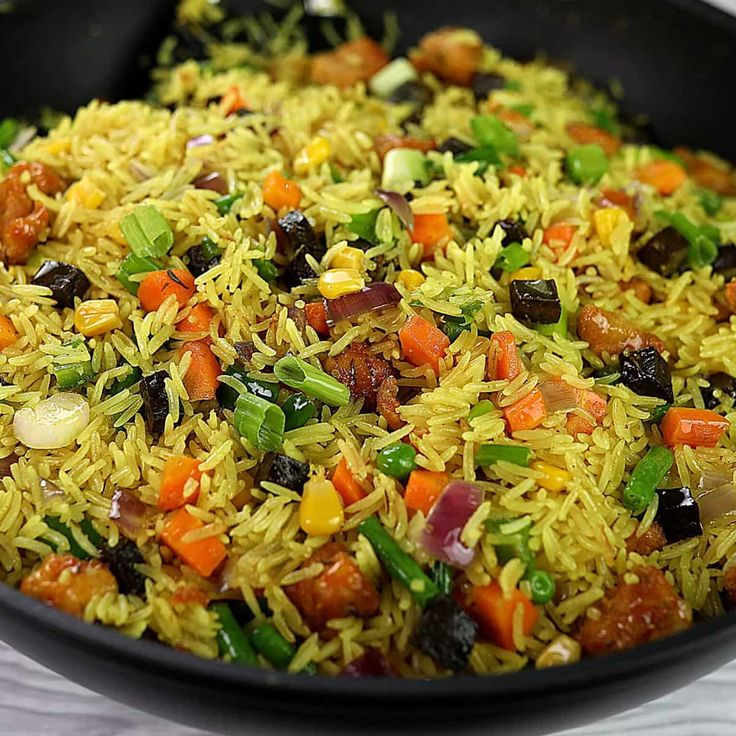

Fried Rice

Description
Fried rice is a delicious and versatile dish made with cooked rice stir-fried with vegetables, eggs, and protein like chicken or shrimp. It's quick, flavorful, and perfect for using leftovers.
This Asian-inspired dish is a favorite for weeknight dinners, offering endless variations depending on your taste and ingredients on hand.
- Long grain parboiled rice
- Tomato paste
- Fresh tomatoes
- Red bell peppers
- Onions
- Garlic and ginger
- Vegetable or chicken stock
- Thyme and curry powder
- Salt and seasoning cubes
- Vegetable oil
Steps
- Heat oil in a pan or wok and sauté chopped onions and garlic.
- Add vegetables and stir-fry for a few minutes until tender.
- Push vegetables to the side and pour in beaten eggs. Scramble until cooked.
- Add in your cooked rice and stir everything together.
- Add soy sauce, salt, and pepper to taste.
- Optionally, stir in cooked chicken or shrimp for protein.
- Fry for a few more minutes until rice is well mixed and heated through.
- Serve hot, optionally with a side of salad or sauce.
Back to Home